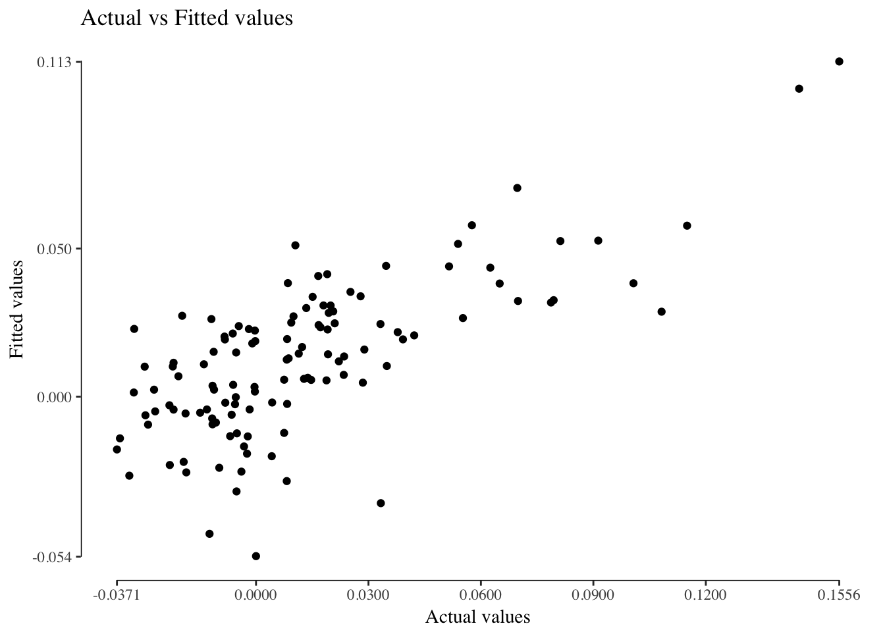

Blog
Bootstrapping StepAIC()
I work in the field of finance and find that people often rely on OLS regressions for doing predictive analysis. It’s easy to implement and everyone knows about it. OLS regression gives us a very well developed mathematical framework which can be used to develop linear relationships. These relationships can then be used to create forward looking projections. But what about the features? How does one go about selecting the right feature set which can be used to reliably predict the variable under consideration?
Stepwise variable selection is one of the most commonly used variable selection algorithms. The reliability of stepwise and or subset selection techniques is debatable. If you are a statistician chances are you are not a big fan of such algorithms. None the less, such techniques are popular and I have come across a lot of people using them.
One of the ways one could make the stepwise selection process more reliable is by bootstrapping it. The process can be broken down into the following steps:
- Select a random subset from your data set
- Run stepwise selection on this subset
- Record the features that were selected
- Repeat steps 1 to 3 many times
The end result is that now we can see how many times a specific feature (predictor variable) gets selected. Now, this bootstrapping technique just creates a random data set from the given data set (drawing with replacement). One could try to run a bootstrap procedure by creating a random starting point for the stepwise algorithm to work on.
Hopefully this little extra step would give you some insight as to which predictor variables could be most useful.
The bootStepAIC package is written by Dimitris Rizopoulos.
The following code snippets follow the post above. For this simple example I’ll use the Managers data set in the Performance Analytics package.
Lets first install the required package.
#Loads package into memory
library(PerformanceAnalytics)
library(dplyr)
library(ggplot2)
library(modelr)
library(ggthemes)
#Load 'Managers' dataset
data(managers)
#The data sets looks like this
glimpse(managers %>% tbl_df(.))## Observations: 132
## Variables: 10
## $ HAM1 <dbl> 0.0074, 0.0193, 0.0155, -0.0091, 0.0076, -0.0039, ...
## $ HAM2 <dbl> NA, NA, NA, NA, NA, NA, NA, -0.0001, 0.1002, 0.033...
## $ HAM3 <dbl> 0.0349, 0.0351, 0.0258, 0.0449, 0.0353, -0.0303, -...
## $ HAM4 <dbl> 0.0222, 0.0195, -0.0098, 0.0236, 0.0028, -0.0019, ...
## $ HAM5 <dbl> NA, NA, NA, NA, NA, NA, NA, NA, NA, NA, NA, NA, NA...
## $ HAM6 <dbl> NA, NA, NA, NA, NA, NA, NA, NA, NA, NA, NA, NA, NA...
## $ EDHEC LS EQ <dbl> NA, NA, NA, NA, NA, NA, NA, NA, NA, NA, NA, NA, 0....
## $ SP500 TR <dbl> 0.0340, 0.0093, 0.0096, 0.0147, 0.0258, 0.0038, -0...
## $ US 10Y TR <dbl> 0.00380, -0.03532, -0.01057, -0.01739, -0.00543, 0...
## $ US 3m TR <dbl> 0.00456, 0.00398, 0.00371, 0.00428, 0.00443, 0.004...Now that we have the data set loaded up, we can do some basic exploratory analysis. The Managers data set is made of the following variables:
- Hedge Fund Returns
- HAM1 to HAM 6
- Risk Factors
- EDHEC Long Short Equity
- SP500
- US 10 Year Treasury yield
- US 3month Treasuty yield
Lets try to plot the kind of relationship HAM2 has with each of the risk factors. We’ll use the pairs function.
#Create a dataframe using HAM2 and the risk factors
df <- tbl_df(managers) %>%
dplyr::select(HAM2, `EDHEC LS EQ`, `SP500 TR`, `US 10Y TR`, `US 3m TR`)
names(df) <- make.names(names(df))
#The data frame should look like this
glimpse(df)## Observations: 132
## Variables: 5
## $ HAM2 <dbl> NA, NA, NA, NA, NA, NA, NA, -0.0001, 0.1002, 0.033...
## $ EDHEC.LS.EQ <dbl> NA, NA, NA, NA, NA, NA, NA, NA, NA, NA, NA, NA, 0....
## $ SP500.TR <dbl> 0.0340, 0.0093, 0.0096, 0.0147, 0.0258, 0.0038, -0...
## $ US.10Y.TR <dbl> 0.00380, -0.03532, -0.01057, -0.01739, -0.00543, 0...
## $ US.3m.TR <dbl> 0.00456, 0.00398, 0.00371, 0.00428, 0.00443, 0.004...#Pairs plot
GGally::ggpairs(df) 
Variable selection
Now for the fun part. As a simple example, lets try to use the avaliable risk factors to predict the returns for manager 2 (HAM2)
LM Fit
As a first case, lets use all the available risk factors to predict future returns for HAM2. We’ll be using the lm function.
#Formula for lm function
linear_model <- lm(HAM2 ~ EDHEC.LS.EQ + SP500.TR + US.10Y.TR + US.3m.TR, data = df)
#The output from the summary function on a lm object should look like this
summary(linear_model)##
## Call:
## lm(formula = HAM2 ~ EDHEC.LS.EQ + SP500.TR + US.10Y.TR + US.3m.TR,
## data = df)
##
## Residuals:
## Min 1Q Median 3Q Max
## -0.055374 -0.018682 -0.003635 0.013378 0.079518
##
## Coefficients:
## Estimate Std. Error t value Pr(>|t|)
## (Intercept) -0.005115 0.005328 -0.960 0.3390
## EDHEC.LS.EQ 1.539069 0.166290 9.255 1.41e-15 ***
## SP500.TR -0.193175 0.076937 -2.511 0.0134 *
## US.10Y.TR 0.045813 0.116777 0.392 0.6956
## US.3m.TR 1.429513 1.546454 0.924 0.3572
## ---
## Signif. codes: 0 '***' 0.001 '**' 0.01 '*' 0.05 '.' 0.1 ' ' 1
##
## Residual standard error: 0.0253 on 115 degrees of freedom
## (12 observations deleted due to missingness)
## Multiple R-squared: 0.5254, Adjusted R-squared: 0.5089
## F-statistic: 31.83 on 4 and 115 DF, p-value: < 2.2e-16pred_df <- df %>%
add_predictions(linear_model, var = "OLS")We didn’t do so bad. We got an R-Square of around 50%. Our adjusted and multiple R-Square values are close to each other, we had enough degrees of freedom and most of our predictor variables are statistically significant.
pred_df %>% na.omit() %>%
ggplot(., aes(x = HAM2, y = OLS)) +
geom_point() +
geom_rangeframe() +
theme_tufte() +
scale_x_continuous(breaks = extended_range_breaks()(pred_df %>% na.omit() %>% select(HAM2))) +
scale_y_continuous(breaks = extended_range_breaks()(pred_df %>% na.omit() %>% select(OLS) %>% round(., 3))) +
ggtitle("Actual vs Fitted values") +
xlab("Actual values") +
ylab("Fitted values")
Stepwise Selection
Now lets see if we can improve on the model by removing any of the predictor variables. We’ll use the stepAIC function in the MASS package.
#I am using trace = F to suppress the output from the stepAIC function
stepfit <- MASS::stepAIC(object = linear_model, scope = list(upper = ~ ., lower = ~1), direction = "backward", trace=F)
summary(stepfit)##
## Call:
## lm(formula = HAM2 ~ EDHEC.LS.EQ + SP500.TR, data = df)
##
## Residuals:
## Min 1Q Median 3Q Max
## -0.050498 -0.017211 -0.005262 0.012211 0.081154
##
## Coefficients:
## Estimate Std. Error t value Pr(>|t|)
## (Intercept) -0.0005315 0.0026008 -0.204 0.83843
## EDHEC.LS.EQ 1.5548911 0.1645687 9.448 4.35e-16 ***
## SP500.TR -0.2007421 0.0759434 -2.643 0.00933 **
## ---
## Signif. codes: 0 '***' 0.001 '**' 0.01 '*' 0.05 '.' 0.1 ' ' 1
##
## Residual standard error: 0.02521 on 117 degrees of freedom
## (12 observations deleted due to missingness)
## Multiple R-squared: 0.5208, Adjusted R-squared: 0.5126
## F-statistic: 63.59 on 2 and 117 DF, p-value: < 2.2e-16In this case the stepwise procedure removes both the treasury variables to arrive at a slightly more parsimonious model containing only 2 variables.
Comparison Table
| Parameter Full Model | Trimmed Model——————— | ——————— | ——————— R-Squared | 52.54% | 52.08% Adj R-Squared | 50.89% | 51.26%
Notice that even though we have only two predictor variables, the model’s predictive power hasn’t changed a lot.
What if we wanted to add a treasury variable to the mix? Which one would you pick? If we had some prior knowledge regarding HAM2 portfolio holdings, we might be able to make a qualitative judgement regarding whether to use the 10 year or the 3 month treasury yield. If not, we could use the bootstrap procedure to derive some useful information.
#Install the package
#install.packages("bootStepAIC",repos="http://cran.us.r-project.org")
#Run bootstrap procedure
bootstrap_procedure <- bootStepAIC::boot.stepAIC(object = linear_model, data = df)
bootstrap_procedure##
## Summary of Bootstrapping the 'stepAIC()' procedure for
##
## Call:
## lm(formula = HAM2 ~ EDHEC.LS.EQ + SP500.TR + US.10Y.TR + US.3m.TR,
## data = df)
##
## Bootstrap samples: 100
## Direction: backward
## Penalty: 2 * df
##
## Covariates selected
## (%)
## EDHEC.LS.EQ 100
## SP500.TR 84
## US.3m.TR 39
## US.10Y.TR 20
##
## Coefficients Sign
## + (%) - (%)
## EDHEC.LS.EQ 100.00 0.00
## US.3m.TR 97.44 2.56
## US.10Y.TR 90.00 10.00
## SP500.TR 0.00 100.00
##
## Stat Significance
## (%)
## EDHEC.LS.EQ 100.00
## SP500.TR 88.10
## US.3m.TR 43.59
## US.10Y.TR 25.00
##
##
## The stepAIC() for the original data-set gave
##
## Call:
## lm(formula = HAM2 ~ EDHEC.LS.EQ + SP500.TR, data = df)
##
## Coefficients:
## (Intercept) EDHEC.LS.EQ SP500.TR
## -0.0005315 1.5548911 -0.2007421
##
##
## Stepwise Model Path
## Analysis of Deviance Table
##
## Initial Model:
## HAM2 ~ EDHEC.LS.EQ + SP500.TR + US.10Y.TR + US.3m.TR
##
## Final Model:
## HAM2 ~ EDHEC.LS.EQ + SP500.TR
##
##
## Step Df Deviance Resid. Df Resid. Dev AIC
## 1 115 0.07362914 -877.5447
## 2 - US.10Y.TR 1 9.853917e-05 116 0.07372768 -879.3843
## 3 - US.3m.TR 1 6.114188e-04 117 0.07433909 -880.3932Let’s draw some observations from the above output:
- EDHEC LS EQ is selected as a predictor everytime
- US 3M TR is selected as a predictor 39% of the time (US 10Y TR is selected 20% of the time)
- Coefficient sign on the treasury variables suggest a positive relationship (since 90-95% of the time the coefficients were positive in nature)
- US 3m TR had a statistically significant coefficient 25% of the time
The above observations can make it easier for us to decide which of the two treasury variables we could use as a possible predictor. We could also use this information to align our view regarding the HAM2 portfolio. If the portfolio is supposed to be more sensitive towards short term interest rates then this quantitative analysis supports that view.
This really was a simple example but hopefully I was able to get my point across. Thanks!